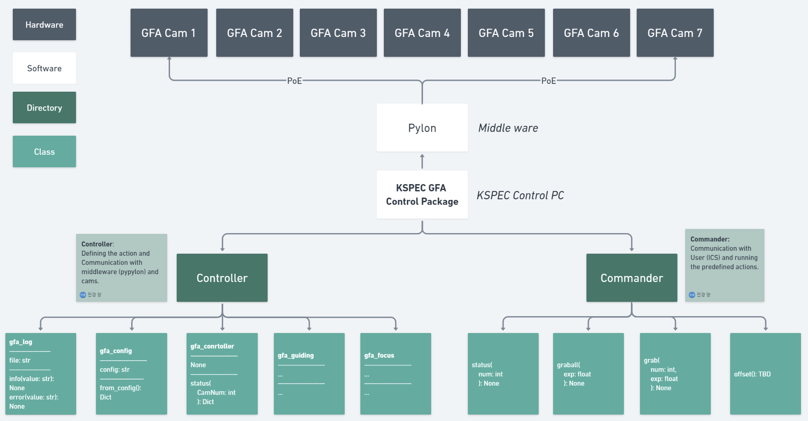

Getting started¶
Introduction¶
KSPEC-GFA is a tool for guiding, focusing, and acquisition sequence control in KSPEC observation.
The Controller communicate with Basler Guide cameras for guiding and focusing processes.
The Controller use the [pypylon](https://github.com/basler/pypylon) library as the middleware for the communication.
Installation¶
kspec-gfa can be installed using by cloning this repository
git clone https://mmingyeong@bitbucket.org/mmmingyeong/kspec-gfa.git
The preferred installation for development is using [poetry](https://python-poetry.org/)
cd kspec-gfa
poetry install
Hardware Components¶
We plan to add it later.
Architecture¶
Here is the Software Architecture diagram explaining the hierarchy of KSPEC-GFA.
